Rhythm Deck Studio
Unleash Your Beat
Complete guide to every feature in Rhythm Deck Studio
This bar controls playback of your entire song. It lets you start/stop, set the speed (BPM), tap in a tempo, and hear a metronome click for perfect timing.
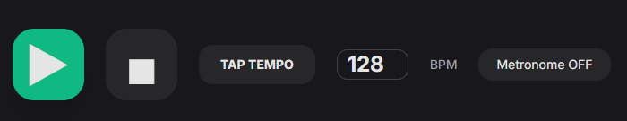
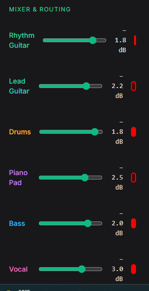
Each track has a red Record Arm button. Arming tells the studio "this track is ready to record".
The left sidebar is your full mixing console. Control volume, stereo position, and send signals to effects.
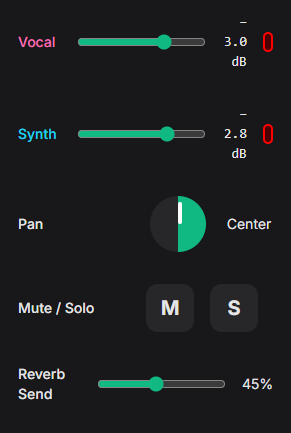
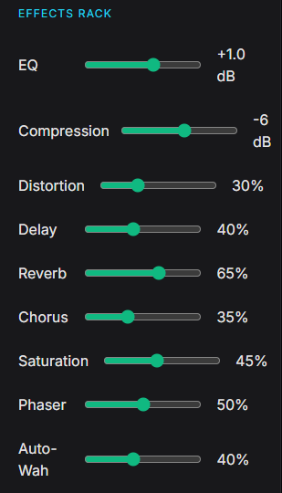
Shape your sound with professional effects. Every slider updates instantly.
The main area where you build your song. Each row is a track (guitar, drums, vocals, etc.).
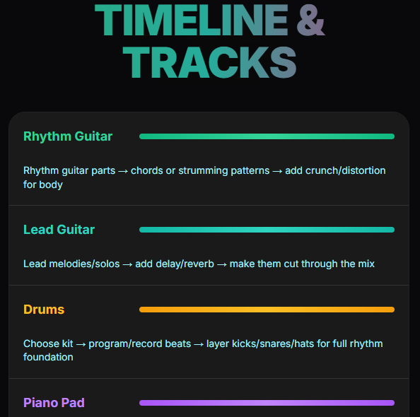
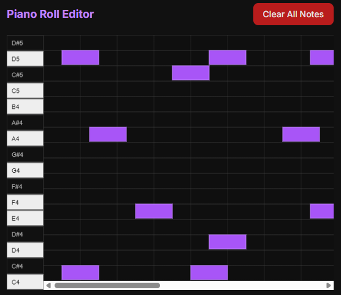
Draw melodies and chords note-by-note.
Build beats quickly with 16 steps and 8 drum sounds.
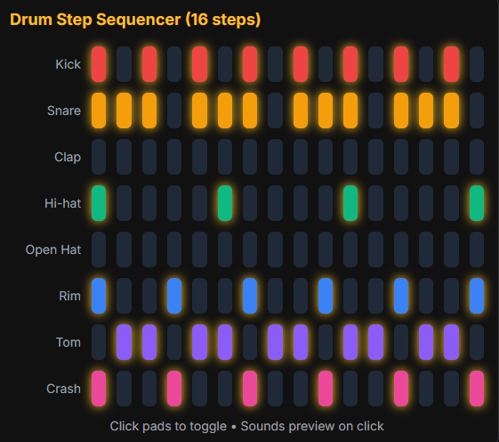
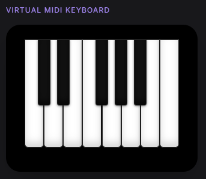
Play notes directly with your mouse or touchscreen — no hardware needed.
Ready-made loops you can drag straight into your song.
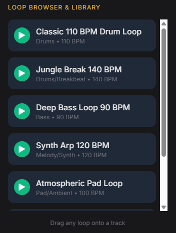
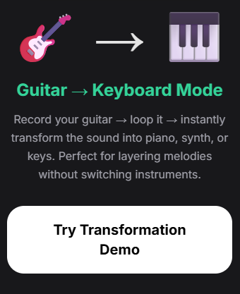
Record your guitar, then instantly turn it into piano, synth, or keys.
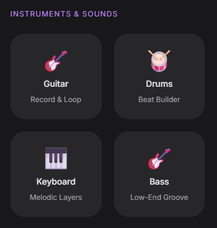
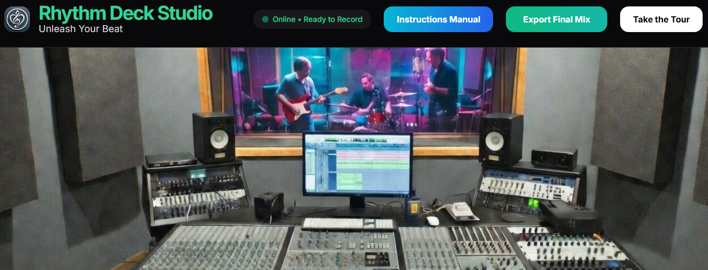
When your song is finished, click the big green Export Final Mix button in the top right.
It creates a professional stereo file ready to share.